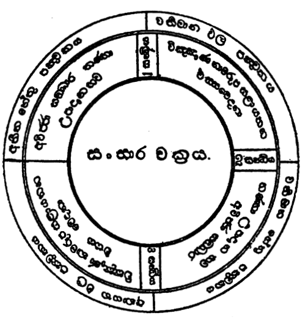
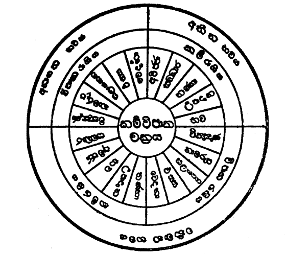

විංශත්යාකාරයෝ
“අතීතේ හේතවෝ පඤ්ච ඉදානි ඵල පඤ්චකං
ඉදානි හේතවේ පඤ්ච ආයතිං ඵල පඤ්චකං”
යනුවෙන් දැක්වෙන පරිදි මේ භව චක්රයෙහි අතීත හේතු පසක් ද, වර්තමාන ඵල පසක් ද, වර්තමාන හේතු පසක් ද, අනාගත ඵල පසක් දැ යි අංග විස්සක් වේ. පටිච්චසමුප්පාද පාළියෙහි අතීත හේතු වශයෙන් ස්වරූපයෙන් දැක්වෙන්නේ අවිද්යා සංස්කාර දෙක ය.
අවිද්යාවෙන් මඩනා ලද තැනැත්තේ ස්වකීය ස්කන්ධයන්ට හා බාහිර රූපශබ්දාදියට ද ආශා කරයි. ආශා කළ තැනැත්තේ මම ය මාගේ ය යනාදීන් ඒවා තදින් ගනී. තදින් ගත් තැනැත්තේ ඒවා නිසා පින් පව් කරයි. එබැවින් අතීත හේතු වශයෙන් අවිද්යා සංස්කාර දෙක ගත් කල්හි තෘෂ්ණා උපාදාන භවයෝ ද ගන්නා ලද්දාහු වෙති. එබැවින් ස්වරූප වශයෙන් දැක්වූ අවිද්යා සංස්කාර දෙක ය, ඒ දෙක ගන්නා කල්හි ගැනෙන තණ්හා උපාදාන කර්මභව යන තුන ය යි අතීත හේතු පසක් වේ.
මෙහි පූර්ව චේතනාව සංස්කාරය යි ද, නිෂ්ඨාපන චේතනාව කර්මභවය යි ද ගත යුතු. පින් වූ හෝ පව් වූ හෝ යම්කිසි ක්රියාවක් කරන්නට දින ගණනක් හෝ සති ගණනක් හෝ මාස ගණනක් හෝ වර්ෂ ගණනක් හෝ කල්පනා කරමින් ගත කරන්නහු ගේ ඒ චේතනා රාශිය පූර්ව චේතනාය යි දත යුතු. කල්පනා කළ පරිදි සිතූ පරිදි ඒ ක්රියාව සිදුකරන්නා වූ චේතනාව නිෂ්ඨාපන චේතනාව ය. යමක් කරන්නට කොතෙක් කල් සිතුවත් එය සිදුකරන්නට නුපුළුවන් වුවහොත් ඒ චේතනා මතු උත්පත්තියක් ඇති කරලීමට තරම් බලවත් නොවෙති. මතු උත්පත්තියක් ඇති කිරීමට තරම් බලවත් වනුයේ නිෂ්ඨාපන චේතනාව ය. නිෂ්ඨාපන චේතනාව ඇති වී කර්මය සිදු වුව හොත් එයින් පූර්ව චේතනා රාශිය ද බලවත් වේ. දුබල පූර්ව චේතනා මතු උත්පත්තියක් ඇති කිරීමට අසමර්ථය යි කී නමුත් ඒවා සර්වප්රකාරයෙන් ම ප්රතිසන්ධියක් ගෙන නො දෙන්නාහු ද නො වෙති. සමහර විට ඒවා ද ප්රතිසන්ධියට හේතු වේ.
තවත් ක්රමයකින් එක් එක් ජීවන වාරයක පූර්ව ජවන සයෙහි චේතනාව සංස්කාරය යි ද, සප්තම ජවන චේතනාව කර්ම භවය යි ද කියනු ලැබේ. දෙවන ජාතියෙහි ප්රතිසන්ධිය සප්තම ජවන චේතනාවෙන් ඇති කරනු ලැබේ. විඤ්ඤාණ, නාමරූප, ෂඩායතන, ස්පර්ශ, වේදනා යන මේ අංග පස අතීත හේතු පස නිසා ඇති වන වර්තමාන ඵල පස ය. පටිච්චසමුප්පාද පාළියෙහි ස්වරූපයෙන් උද්ධරණය කොට දක්වා තිබෙනුයේ තෘෂ්ණා - උපාදාන - භව යන වර්තමාන හේතු තුන පමණෙකි. එහෙත් තෘෂ්ණා උපාදානයන් අවිද්යාව සමග ම මිස අවිද්යාවෙන් වෙන් ව කිසි කලෙක ඇති නො වන බැවින් ඒ දෙක ගත් කල්හි අවිද්යාව ද ගැනෙන්නේ ය. කර්මභවය යි කියනු ලබන නිෂ්ඨාපන චේතනාව හෝ සප්තම ජවන චේතනාව පූර්ව චේතනාවන් ගෙන් තොරව ඇති නො වන බැවින් කර්මභවය ගැනීමෙන් සංස්කාරය ද ගැනෙන්නේ ය. එබැවින් ස්වරූපයෙන් දේශිත තෘෂ්ණා - උපාදාන - භව යන අංග තුන ය, ඒවා ගැනීමෙන් ගැනෙන අවිද්යා - සංස්කාර යන අංග දෙක ය යි වර්තමාන භවයෙහි හේතු පසක් වේ.
අනාගත ඵල වශයෙන් පාළියෙහි දැක්වෙන්නේ ජාතිය හා ජරාමරණය ය. ජාතිය කියා අමුතු දෙයක් නැත. එය නම් විඤ්ඤාණාදි ඵල පඤ්චකය ය. ජරාමරණ යනු ද ඒවායේ ම දිරීම් - බිඳීම් දෙක ය. එබැවින් ජාති ජරාමරණයන් කීමෙන් කියැවෙන්නේ විඤ්ඤාණාදි ඵල පඤ්චකයම ය. එබැවින් විඥාන - නාමරූප - ෂඩායතන - ස්පර්ශ - වේදනා යන මේ පස අනාගත ඵල පඤ්චකය යි දත යුතු.
අතීත හේතු පස - අවිජ්ජා, සංඛාර, තණ්හා, උපාදාන, භව.
වර්තමාන ඵල පස - විඤ්ඤාණ, නාමරූප, සළායතන, ඵස්ස, වේදනා.
වර්තමාන හේතු පස - තණ්හා, උපාදාන, භව, අවිජ්ජා, සංඛාර.
අනාගත ඵල පස - විඤ්ඤාණ, නාමරූප, සළායතන, ඵස්ස, වේදනා.

අවයව පස බැගින් ඇති රාශි සතරකින් යුක්ත මේ ධර්ම පරම්පරාව ගරාදි විස්සක් ඇති කරත්ත රෝදයක් වැනි ය. බිම පෙරළෙමින් යන රෝදය වරක් බිමට සිටි තැන උඩට හැරී ගොස්, නැවතත් බිමට පැමිණෙමින් කොතෙක් දුර වුවත් පෙරළෙන්නාක් මෙන්, හේතුවෙන් ඵලයත් නැවත ඵලයෙන් හේතුවත් ඒ හේතුවෙන් නැවත ඵලයත් ඇතිවෙමින් ඉමක් කොණක් නැති ව මෙම හේතු ඵල පරම්පරාව පෙරළෙමින් පවත්නේ ය. මෙය චක්රයක් වැනිය යි කියන ලදුයේ එහෙයිනි.

මේ හේතු ඵල පරම්පරාව කර්ම විපාක වශයෙන් ද චක්රයකි. මෙහි අතීත හේතු පස කර්ම කොට්ඨාසයට ඇතුළත් ය. වර්තමාන ළුල පස විපාක කොට්ඨාසයට ඇතුළත් ය. වර්තමාන හේතු පස කර්ම කොට්ඨාසයට ඇතුළත් ය. අනාගත ඵල පස විපාක කොට්ඨාසයට ඇතුළත් ය. කර්මය නිසා විපාක ඇති වීමෙන් ද, විපාකය නිසා නැවත කර්මය ඇති වීමෙන් ද, මේ චක්රය කර්මක්ෂයකරඥානයෙන් කර්මයන් ක්ෂය කරන තුරු නැවත නැවතත් පෙරළෙමින් පවත්නේ ය.